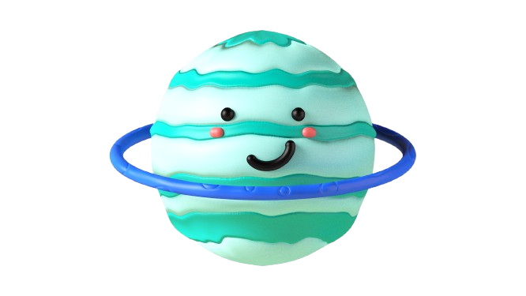

Uranus
Uranus is a pale blue-green ice giant. Its axis is tilted about 98 degrees, so it travels around the Sun on its side.
Type
Ice giant
Distance from Sun
2.9 billion km
Length of a Day
17 hours 14 minutes
Length of a Year
84 Earth years
Cloud-Top Temperature
About -224°C
Known Moons
28